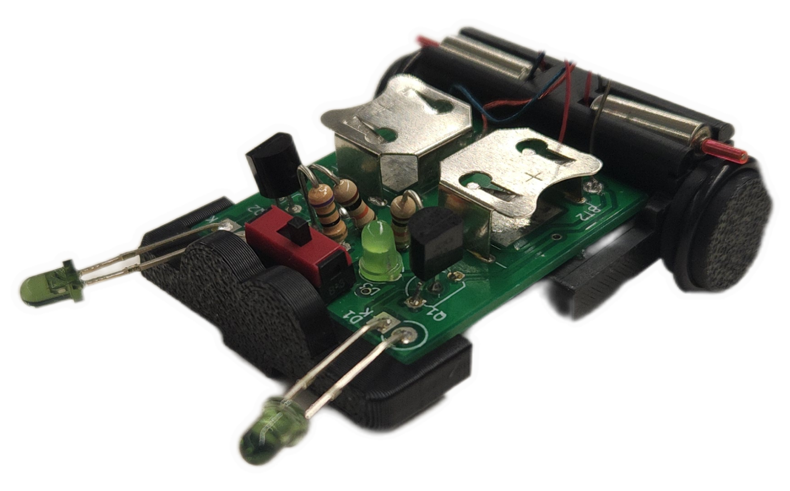

ロボットについて
このロボットは大きさが約3cmのマイクロロボットです。ロボットに光を当てると光を追いかけ走ります。この動きを光源追跡と言います。
摩擦車を利用し、小型モーターから力を受けることでタイヤが回り走ります。スイッチを入れるとLEDが光り、モータが動く準備ができたことを知らせます。
スマホのライトや懐中電灯の光でロボットを動かしてみましょう！
マイクロロボットのデモ動画
光源追跡シミュレーター
ライトを動かしてロボットを操作しよう！
ロボットが光を追いかけるよ。
※マウスまたはタッチで操作できます